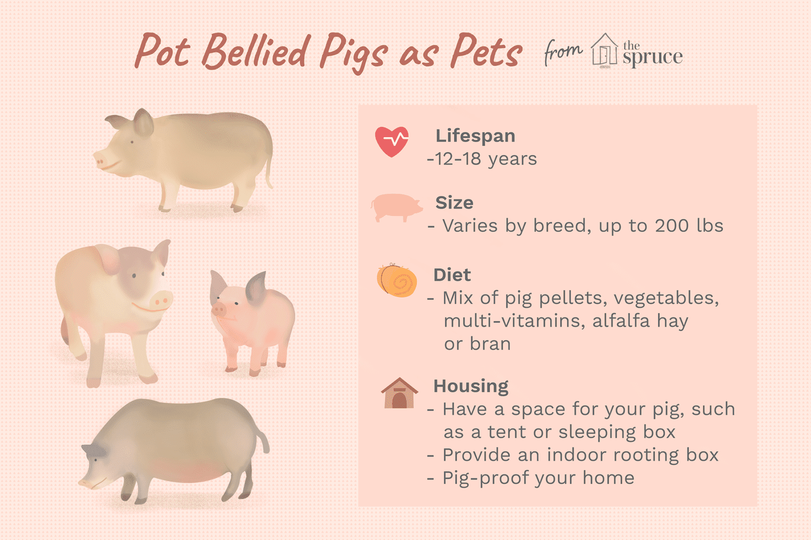
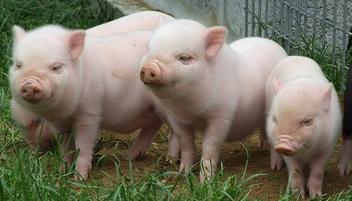
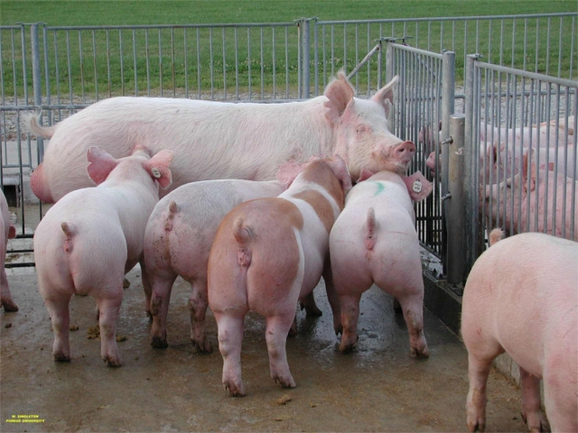
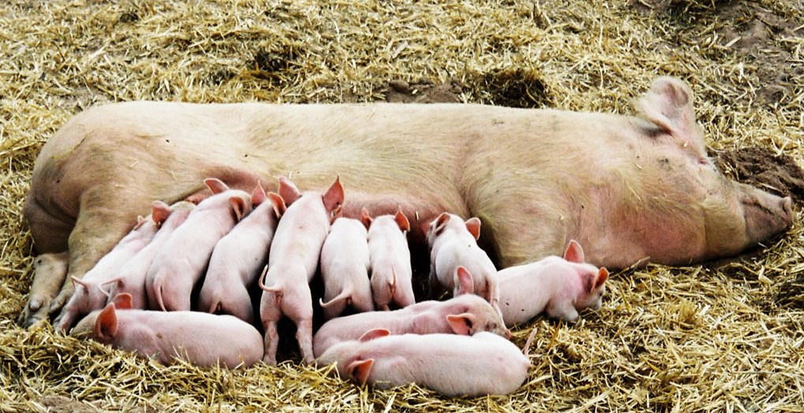
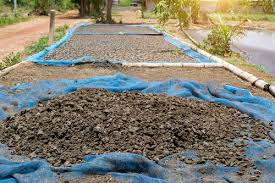
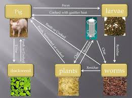

MANAGEMENT PRACTICES
Breeding care

1.Pigs are highly prolific in nature and two farrowings in a year should be planned by adopting optimal management conditions.
2.For every 10 sows one boar must be maintained for maximum fertility.
3.Breed the animals when it is in peak heat period (i.e. 12 to 24 hours of heat).
2.For every 10 sows one boar must be maintained for maximum fertility.
3.Breed the animals when it is in peak heat period (i.e. 12 to 24 hours of heat).
Care during Pregnancy
Give special attention to pregnant sows one week before farrowing by providing adequate space, feed, water etc. The sows as well as farrowing pens should be disinfected 3-4 days before the expected date of farrowing and the sows should be placed in the farrowing pen after bedding it properly.
Care of Piglets
1.Take care of new born piglets by providing guard rails.
2.Treat / disinfect the navel cord with tincture of iodine as soon as it is cut with a sharp knife.
3.Feed on mothers’ milk for first 6-8 weeks along with creep feed.
4.Protect the piglets against extreme weather conditions, particularly during the first two months.
5.Needle teeth should be clipped shortly after birth.
6.Vaccinate the piglets as per recommended vaccination schedule.
7.Supplementation of Iron to prevent piglet anemia is necessary.
8.The piglets meant for sale as breeder stock must be reared properly.
9.Male piglets not selected for breeding should be castrated preferably at the age of 3-4 weeks which will prevent the boar odour in the cooked meat thus it enables production of quality meat.
10.Additional feed requirements of lactating sow must be ensured for proper nursing of all the piglets born.
Care and management of sow:

Care and management of sows are very essential since they are retained in the herd mainly for breeding. Good management and feeding will minimize problems related to breeding. Sows should be looked after with particular care so that the piglets are delivered normally and nursed properly.
Farrowing Sow and Litter:
1.Clean and disinfect the farrowing pen with a solution of 2 % of phenyl lotion and keep it vacant for a week.
2.The pregnant female may be dewormed 2-3 weeks before farrowing and prior to admitting into the farrowing pen. Spray with external parasiticide (1% solution of malathion/cythion, butox. 0.05 %). Scrub the under surface, sides, interdigital space and udder to remove dirt, eggs of parasites, disease germs etc. with soap and water just before moving into the farrowing pen.
3.Move the clean animal to the clean pen 10 days before farrowing.
4.Provide light bedding of chopped straw 2-3 days before farrowing.
5.Appearance of milk in teats when pressed indicates the approach of farrowing time.
6.Attend the farrowing throughout. It may last up to 24 hours.
7.Wipe the piglets clean with towel/straw. Disinfect the naval cord with tincture of iodine. Normal healthy piglets suckle teats within 10-30 minutes. Help small piglets to suckle.
8.Placenta, dead piglets, soiled bedding etc. may be removed and buried in time with least delay. The placenta will be expelled generally within a short while.
9.Provide 50 mg iron (Imferon 1 ml) on the second day intra-muscularly to prevent piglet anaemia. Oral administration of iron solution (1 g Ferrous sulphate in 25 ml of water) 1 ml per piglet once a week can be tried. A second injection may be given at 5 weeks of age.
10.Keep the farrowing pen warm, dry and clean.
11.Needle teeth may be removed carefully.
The time taken for expulsion of litter vary from 1 hour to 5 hours. The interval between the birth of the first and that of successive piglets vary from a few minutes to 3 hours. About 30 per cent of piglets are usually born in posterior presentation. Generally placenta is shed only after all the piglings are born. Expulsion of placenta is usually within 3 hours after expulsion of foetus. Piglets start suckling within 10-15 minutes after birth. Artificial heat may be provided by using an infrared lamp / ordinary electric bulb during cold and rainy season to avoid death due to chilling.
Breeding management:
The sows come to heat once in about 21 days. Good feeding and management induces heat (estrus) makes breeding easy, and larger litter size. Along with grains, fish meal. skim milk or butter milk may be given 2-3 weeks prior to breeding to allow a body weight gain of 200-300 gm/day.
The average gestation period of sow is about 112-115 days the normal litter size is 8-10 piglets. Older sows as larger litter size with high birth weight.
Care at farrowing time:
The pregnant sow should be shifted to farrowing pen 3-4 days before farrowing to avoid disturbances and to settle down in new Surroundings. The forrowing pen should be dry, well ventilated and lighted. Bedding material should be provided in the farrowing pen.
Prior to farrowing time, the ration of sow should be reduced to half and should contain laxative ingredient like wheat bran. The sow should be left undisturbed at farrowing and may be helped during emergencies. Remove piglets from a nervous sow and allowed to suckle under supervision. As soon as the piglets are born, they are dried with a cloth and placed in warm enclosure pig brooder.
Brood sows should be given well-balanced rations. Feeding should be started in small quantities of concentrate mixtures along with laxatives like wheat bran.
Care and management of sucking sows :
A sow gives about 150-200 kg of milk during 8 week suckling period. Sows milk is more concentrated than cows milk hence sow require more feed. Allow 1.5kg of feed for the sow and add 0.5 kg of feed per piglet to a maximum of 5-6 kg of total ration. Plenty of Lucerne hay and succulent fodder may be provided.
A few days prior to weaning, the quantity of feed is gradually reduced to restrict milk flow and dry the udder.
Care and management of boar:
The boar should be maintained in a separate pen. They should neither be overfed nor underfed, since both will affect its breeding capacity. It should be fleshy, and thrifty but not too fatty. The feed requirements include both the demands for maintenance and reproduction. During off-season the boar should be given plenty of grasses and legume hay and 2kg of concentrate mixture. An additional 0.5 kg of concentrate may be given 2 weeks prior to breeding season.
Boars should not be used for breeding earlier than 8 months of age. A young boar can be used for 15-20 sows in a season and older ones may be used for about 25-45 sows. A boar can be allowed to serve before being fed. Not more than one service per day is allowed during breeding season. Older sows may be used for breeding season. Older sows may be used for breeding with younger boars.
Boar should have free access to water and boar pen is kept clean and dry. Dampness should be avoided. The boar should be scrubbed and washed daily and kept clean. Trimming of boar's feet periodically will prevent lameness in boars. The bolt cutters can be used to remove tusks of boars to avoid injuries to sows and attendants.
Newly purchased boars should be kept separately for 2-3 weeks to avoid risk of introducing any disease into the farm.
Care and management of piglets:
Care of newborn

The piglets are removed as they are farrowed and kept warm in creep space until farrowing is complete.
Each piglet is cleaned of all mucous to ensure that the breathing passage is clear
The navel card should be tied 2.5 cm away from the navel, remaining portion is removed hygienically and stumps are painted with iodine.
Piglets should be nursed after birth. They nurse 8-10 times in a day.
Piglets are born with 4 pairs of sharp teeth (2 pairs on each jaw) which may injure udder or teats. Hence clip these teeth soon after birth.
Piglet anemia (Thumps) : Since sows milk is deficient in iron and copper piglets suffer from serious deficiency resulting in anemia. Affected piglets become weak, dyspeptic, and have distressed breathing.
This disease is also called thumps because of their difficulty in breathing.
To prevent piglets anemia udder of sow may be swabbed daily with a saturated solution of ferrous sulfate for 4-6 weeks so that piglets can get these minerals while suckling the milk. Another effective method is injection of iron - dextran compounds available commercially.
 Creep feeding: Piglets take dry feed at 2-3 weeks. Provision of additional nutrients at this time is essential to have maximum growth and development. Creep feed is also called as pig starter for vigorous growth the thriftiness, sows milk alone .is not sufficient for piglets. Creep feed contains 25-30% CP.
Creep feeding: Piglets take dry feed at 2-3 weeks. Provision of additional nutrients at this time is essential to have maximum growth and development. Creep feed is also called as pig starter for vigorous growth the thriftiness, sows milk alone .is not sufficient for piglets. Creep feed contains 25-30% CP.
Creep is a device by which piglets are allowed access to the concentrate mixture. It may be arranged of the corner of farrowing pen. Creep feed is' fed from 14-56 days. The composition is as follows.
Weaning of piglets: Usually weaning is done at 7-8 weeks. The sow should be separated from the piglets for a few hours each day to prevent stress of weaning and its feed is reduced gradually.
Orphan piglets : Can be raised either with a foster sow or the use of milk replacer
Nutrition
Principles of Cow Comfort
The nutritional requirements of swine vary with sex, age and physiological status of the animal. According to the nutritional requirements, swine can be classified into 11 distinct groups as follows.
Young pigs:
Pre starter pigs (2-5 kg)
Starter pigs (5-11 kg)
Grower pigs (11-23 kg)
Weaning to market pigs:
4. Growing and finishing hogs (23-57kg)
5. Finishing hogs (57-91 kg)
Adult males:
6. Boars
Adult females:
7 .Gilts
8. Un bred sows
9. Pregnant sows
10. Sows at the time of parturition
11. Lactating sows
Manure disposal

The dry solid dung may be collected morning and evening and stored in the dung shed. The liquid part of urine and washings may be taken to settling tanks.
Integration

Pigs can be effectively integrated to a biogas plant for meeting the cooking /lighting demand of the farmers. It can also be integrated to agriculture and fish culture thereby increasing the overall economic efficiency of the system. The pig dung is good organic manure in dried form or as compost.
Approximate daily manure production of pigs
Based on ASAE data, for every 1000 kg of pig live animal mass, 84 kg of manure is produced daily (this is equivalent to 5.4 L/day for a 64 kg pig) at 13.1% dry matter.
Boars should not be used for breeding earlier than 8 months of age. A young boar can be used for 15-20 sows in a season and older ones may be used for about 25-45 sows. A boar can be allowed to serve before being fed. Not more than one service per day is allowed during breeding season. Older sows may be used for breeding season. Older sows may be used for breeding with younger boars.
Boar should have free access to water and boar pen is kept clean and dry. Dampness should be avoided. The boar should be scrubbed and washed daily and kept clean. Trimming of boar's feet periodically will prevent lameness in boars. The bolt cutters can be used to remove tusks of boars to avoid injuries to sows and attendants.
Newly purchased boars should be kept separately for 2-3 weeks to avoid risk of introducing any disease into the farm.
This disease is also called thumps because of their difficulty in breathing.
To prevent piglets anemia udder of sow may be swabbed daily with a saturated solution of ferrous sulfate for 4-6 weeks so that piglets can get these minerals while suckling the milk. Another effective method is injection of iron - dextran compounds available commercially.
Creep feeding: Piglets take dry feed at 2-3 weeks. Provision of additional nutrients at this time is essential to have maximum growth and development. Creep feed is also called as pig starter for vigorous growth the thriftiness, sows milk alone .is not sufficient for piglets. Creep feed contains 25-30% CP.Creep is a device by which piglets are allowed access to the concentrate mixture. It may be arranged of the corner of farrowing pen. Creep feed is' fed from 14-56 days. The composition is as follows.
Weaning of piglets: Usually weaning is done at 7-8 weeks. The sow should be separated from the piglets for a few hours each day to prevent stress of weaning and its feed is reduced gradually.
Orphan piglets : Can be raised either with a foster sow or the use of milk replacer
Young pigs:
Pre starter pigs (2-5 kg)
Starter pigs (5-11 kg)
Grower pigs (11-23 kg)
Weaning to market pigs:
4. Growing and finishing hogs (23-57kg)
5. Finishing hogs (57-91 kg)
Adult males:
6. Boars
Adult females:
7 .Gilts
8. Un bred sows
9. Pregnant sows
10. Sows at the time of parturition
11. Lactating sows
Albin Anto
Department of BCA(Computer Applications)
Albin Anto
Department of BCA(Computer Applications)
Department of BCA(Computer Applications)